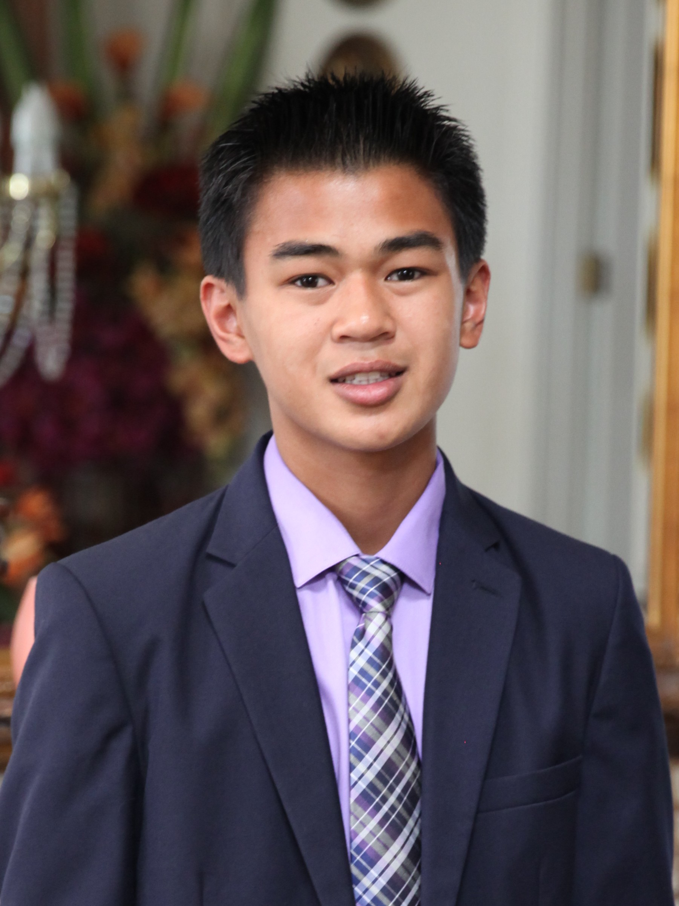

About Me

I am a sophmore at Dublin High School who is interested in learning computer programming and engineering. Currently, I am enrolled in the Dublin High School Engineering Academy and taking POE, a survey course designed to introduce students to various aspects of the engineering field. Other PLTW courses I have taken include CSE, a course desgined to introduce programming and engineering at the same time. So far, I have been introduced to various web languages, such as HTML & CSS, Python, and Javascript, through CSE and personal work. I have worked with object oriented languages such as C++, RobotC, Lego NXT, and Arduino through robotics and classes. In the future, I want to focus on computer software development. My dream is to make original, innovative software.
I have prior experience in robotics and engineering. I joined Lego FLL Robotics League in 6th grade, which was my first exposure to engineering. I became a programmer on that team, and we were fairly successful. I stayed with that team for 3 years and became main programmer. FLL Robotics served as a baseline for my future experiences in robotics, and taught me valuable team skills, such as communication and teamwork. Currently, I am a member of DHS Robotics Team Gael Force 5327B. It is my second year as a member of a VEX team. My team last year, 5327B, was successful, winning several design awards and qualifying for the VEX World Championships, where won the Think Award in our division. This year, the team saw similar success, winning design at States and the Think Award at Worlds for the second year in a row. I have recently been elected to be team captain of 5327B in the upcoming school year, and I hope to be able to achieve the same success as my predecessors, and improve upon the skills of all my teammates.
In school, I am taking several advanced classes, and am a member of the Dublin Engineering and Design Academy (DEDA). I have a cumulative 4.25 GPA, and I also am an active member of the DHS Robotics, CSF, and NHS clubs. My goal is to graduate from Dublin High as an advanced scholar, and take all math courses offered at Dublin High. I also was on honor roll for all 12 quarters of middle school, and I received the Academic Excellence award in middle school for having a 4.0 GPA for all 3 years of middle school. In middle school, I was a member of the Fallon Concert and Jazz Band, and I played the alto saxophone. Out of my three years in the middle school band, I was first chair alto for two of them, and I was a main soloist in my last year. I also received the "Jazz Member of the Year" award at my 8th grade graduation because of my dedication and effort to the band.
Outside of school, I am a Life Scout in Troop 968, and I also have served various leadership positions, including Assistant Senior Patrol Leader and Scribe. I also am one of the founders of our troop, along with several of my close friends. Some of my other extracurricular activities include basketball and taekwondo. In taekwondo, I have earned my 2nd Degree black belt in 2 different schools over the course of 9 years. In the future, I would like to be able to teach and assist others with taekwondo. For basketball, I've played basketball for 6 years for my church's CYO team. My team has qualified for CYO playoffs for 5 of the 6 years, and we won in 2014. Aside from CYO, I have also played for my school team in 7th grade, and I also competed in AAU tournaments starting in 8th grade. For now, I have taken a break from basketball and taekwondo to focus on school and robotics, but I plan on returning once I have more time.
In the future, I want to pursue computers and engineering. I want to learn how the devices I use daily work, and I want to be able to understand and develop those technologies. I plan on majoring in computer sciences and electrical engineering when I go to college. I want to go to a prestigious school so that I can pursue a job in the technology industry. I'm taking this class as an introduction to these concepts, and to find out whether engineering is the right career for me.
Alternatively, contact me by email at osnhoj@gmail.com.